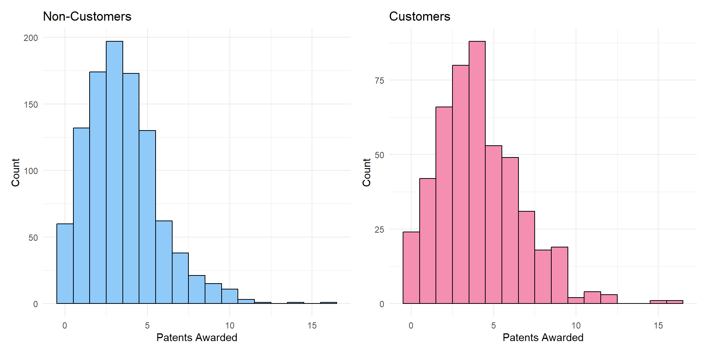

Show code
library(tidyverse)
# Read in the Blueprinty dataset
blueprinty <- read_csv("C:/Users/krish/hamsavi/blog/project4/blueprinty.csv")
airbnb <- read_csv("C:/Users/krish/hamsavi/blog/project4/airbnb.csv")Hamsavi Krishnan
May 7, 2025
Blueprinty is a small firm that makes software for developing blueprints specifically for submitting patent applications to the US patent office. Their marketing team would like to make the claim that patent applicants using Blueprinty’s software are more successful in getting their patent applications approved. Ideal data to study such an effect might include the success rate of patent applications before using Blueprinty’s software and after using it. Unfortunately, such data is not available.
However, Blueprinty has collected data on 1,500 mature (non-startup) engineering firms. The data include each firm’s number of patents awarded over the last 5 years, regional location, age since incorporation, and whether or not the firm uses Blueprinty’s software. The marketing team would like to use this data to make the claim that firms using Blueprinty’s software are more successful in getting their patent applications approved.
library(ggplot2)
library(dplyr)
library(patchwork)
blueprinty <- blueprinty %>%
mutate(iscustomer = factor(iscustomer, levels = c(0, 1), labels = c("Non-Customer", "Customer")))
hist_non <- ggplot(filter(blueprinty, iscustomer == "Non-Customer"),
aes(x = patents)) +
geom_histogram(binwidth = 1, fill = "#90CAF9", color = "black") +
labs(title = "Non-Customers", x = "Patents Awarded", y = "Count") +
theme_minimal()
hist_cust <- ggplot(filter(blueprinty, iscustomer == "Customer"),
aes(x = patents)) +
geom_histogram(binwidth = 1, fill = "#F48FB1", color = "black") +
labs(title = "Customers", x = "Patents Awarded", y = "Count") +
theme_minimal()
hist_non + hist_cust
library(dplyr)
library(knitr)
blueprinty %>%
group_by(iscustomer) %>%
summarise(
mean_patents = round(mean(patents), 2),
n = n()
) %>%
mutate(iscustomer = ifelse(iscustomer == 1, "Customer", "Non-Customer")) %>%
kable(
caption = "Mean number of patents awarded by Blueprinty customer status",
col.names = c("Customer Status", "Mean Patents", "Sample Size")
)| Customer Status | Mean Patents | Sample Size |
|---|---|---|
| Non-Customer | 3.47 | 1019 |
| Non-Customer | 4.13 | 481 |
In this analysis, we compare the distribution of patents awarded between Blueprinty customers and non-customers. The histograms show that customers tend to have higher patent counts on average. The accompanying summary table confirms this, with customers averaging 4.13 patents versus 3.47 for non-customers. This suggests a potential association between using Blueprinty’s software and increased innovation output. However, because customer status is not randomly assigned, these differences may also be influenced by other factors like firm age or region. To account for these confounding variables, we proceed with a Poisson regression model that adjusts for such covariate
Firms that use Blueprinty’s software tend to have a distribution shifted toward higher patent counts, suggesting a possible link between software use and innovation productivity. However, because customer status is not randomly assigned, these differences could reflect other factors like firm age or region, which we will adjust for in the Poisson regression.
Blueprinty customers are not selected at random. It may be important to account for systematic differences in the age and regional location of customers vs non-customers.
library(ggplot2)
library(dplyr)
# Rename your dataset to avoid conflict with built-in function
blueprinty <- read_csv("C:/Users/krish/hamsavi/blog/project4/blueprinty.csv")
# Remove missing customer values and label them
blueprinty <- blueprinty %>%
filter(!is.na(iscustomer)) %>%
mutate(iscustomer = factor(iscustomer, labels = c("Non-Customer", "Customer")))
# -----------------------------
# 1. Age Distribution Boxplot
# -----------------------------
ggplot(blueprinty, aes(x = iscustomer, y = age, fill = iscustomer)) +
geom_boxplot(alpha = 0.7) +
labs(
title = "Age Distribution by Customer Status",
x = "Customer Status",
y = "Age"
) +
theme_minimal() +
theme(legend.position = "none") +
scale_fill_manual(values = c("lightblue", "lightgreen"))# -----------------------------
# 2. Region Distribution Barplot
# -----------------------------
blueprinty %>%
group_by(region, iscustomer) %>%
summarise(count = n(), .groups = "drop") %>%
group_by(iscustomer) %>%
mutate(percentage = count / sum(count) * 100) %>%
ggplot(aes(x = region, y = percentage, fill = iscustomer)) +
geom_bar(stat = "identity", position = position_dodge()) +
labs(
title = "Region Distribution by Customer Status",
x = "Region",
y = "Percentage (%)",
fill = "Customer Status"
) +
theme_minimal() +
scale_fill_manual(values = c("orange", "tomato")) +
theme(axis.text.x = element_text(angle = 45, hjust = 1))To investigate whether customer and non-customer firms differ demographically, we compare their age and regional distributions. The boxplot of Age Distribution by Customer Status shows that customers tend to be slightly older on average, although there is considerable overlap between the two groups. This age difference may partly explain the higher patent counts observed among customers earlier.
We also examine regional representation using a grouped bar chart. The plot indicates that Blueprinty customers are disproportionately concentrated in the Northeast, while non-customers are more evenly spread across other regions like the Midwest and South. These regional and age-based differences highlight the importance of controlling for such covariates when modeling patent outcomes — otherwise, we risk attributing differences in patenting activity to software use when they may actually stem from underlying demographic variation
Since our outcome variable of interest can only be small integer values per a set unit of time, we can use a Poisson density to model the number of patents awarded to each engineering firm over the last 5 years. We start by estimating a simple Poisson model via Maximum Likelihood.
The probability mass function of the Poisson distribution is given by:
\[ f(Y_i \mid \lambda) = \frac{e^{-\lambda} \lambda^{Y_i}}{Y_i!} \]
Assuming we have ( n ) independent observations ( Y_1, Y_2, , Y_n ), the likelihood function is:
\[ L(\lambda) = \prod_{i=1}^{n} \frac{e^{-\lambda} \lambda^{Y_i}}{Y_i!} \]
Taking the natural logarithm of the likelihood, the log-likelihood function becomes:
\[ \log L(\lambda) = \sum_{i=1}^{n} \left( -\lambda + Y_i \log \lambda - \log(Y_i!) \right) \]
This function will be maximized in the next step to estimate the value of ( ) that best fits the data.
To estimate the parameter ùúÜ Œª for a Poisson distribution, we begin by examining the shape of the log-likelihood function. The log-likelihood measures how well different values of ùúÜ Œª explain the observed number of patents in our sample. The value that maximizes this function is the maximum likelihood estimate (MLE).
Below, we evaluate the log-likelihood across a range of plausible ùúÜ Œª values and visualize the results. This approach gives us insight into how sensitive the model fit is to different assumptions about the average patent rate.
# Sample vector Y: observed patent counts
Y <- blueprinty$patents
# Define log-likelihood function for Poisson with constant lambda
loglik_poisson <- function(lambda, y) {
if (lambda <= 0) return(-Inf) # Poisson requires lambda > 0
sum(dpois(y, lambda, log = TRUE))
}
# Generate a sequence of lambda values to test
lambda_vals <- seq(0.1, 10, by = 0.1)
# Compute log-likelihood for each lambda
loglik_vals <- sapply(lambda_vals, loglik_poisson, y = Y)
# Plot log-likelihood vs lambda
library(ggplot2)
ggplot(data.frame(lambda = lambda_vals, loglik = loglik_vals), aes(x = lambda, y = loglik)) +
geom_line(color = "steelblue", size = 1) +
geom_vline(xintercept = mean(Y), linetype = "dashed", color = "darkred") +
labs(
title = "Log-Likelihood for Poisson Model",
x = expression(lambda),
y = "Log-Likelihood"
) +
theme_minimal()The plot shows that the log-likelihood peaks around ùúÜ = mean ( ùëå ) Œª=mean(Y), which aligns with the known result that the MLE for a Poisson model with constant ùúÜ Œª is simply the sample mean. This validates our understanding of how the Poisson distribution behaves and sets the stage for fitting a full model using optim() or glm() in the next step.
To deepen our understanding of the Poisson likelihood, we can derive the MLE analytically by taking the first derivative of the log-likelihood function and solving for ( ).
Recall the log-likelihood for ( n ) independent observations ( Y_1, Y_2, , Y_n () ) is:
\[ \log L(\lambda) = \sum_{i=1}^{n} \left( -\lambda + Y_i \log \lambda - \log(Y_i!) \right) \]
Taking the derivative with respect to ( ):
\[ \frac{d}{d\lambda} \log L(\lambda) = \sum_{i=1}^{n} \left( -1 + \frac{Y_i}{\lambda} \right) = -n + \frac{1}{\lambda} \sum_{i=1}^{n} Y_i \]
Setting this derivative equal to 0 and solving for ( ):
\[ -n + \frac{1}{\lambda} \sum_{i=1}^{n} Y_i = 0 \quad \Rightarrow \quad \hat{\lambda} = \frac{1}{n} \sum_{i=1}^{n} Y_i = \bar{Y} \]
Thus, the MLE of ( ) is simply the sample mean ( {Y} ). This result makes intuitive sense: the Poisson distribution models count data with a mean equal to ( ), so it’s natural that the best estimate of ( ) is the average count in the data.
To estimate the value of ùúÜ Œª that best explains our observed patent counts, we use Maximum Likelihood Estimation (MLE). The log-likelihood function we defined earlier is maximized using R‚Äôs optim() function. Since optim() minimizes by default, we provide the negative log-likelihood as the objective function.
# Define negative log-likelihood function
neg_loglik_poisson <- function(lambda, y) {
if (lambda <= 0) return(Inf) # invalid λ
-sum(dpois(y, lambda, log = TRUE))
}
# Run optimization using initial guess
mle_result <- optim(
par = 1, # initial guess for lambda
fn = neg_loglik_poisson,
y = blueprinty$patents,
method = "Brent", # 1D optimization method
lower = 0.01, upper = 20
)
# Print estimated lambda
mle_result$par[1] 3.684667The optimizer returns a maximum likelihood estimate of:
\[ \hat{\lambda} \approx 3.685 \]
This is very close to the sample mean of the observed number of patents. This confirms the theoretical result that, for a Poisson model with constant ( ), the MLE of ( ) is simply the sample mean:
\[ \hat{\lambda}_{\text{theory}} = \frac{1}{n} \sum_{i=1}^{n} Y_i \]
Next, we extend our simple Poisson model to a Poisson Regression Model such that \(Y_i = \text{Poisson}(\lambda_i)\) where \(\lambda_i = \exp(X_i'\beta)\). The interpretation is that the success rate of patent awards is not constant across all firms (\(\lambda\)) but rather is a function of firm characteristics \(X_i\). Specifically, we will use the covariates age, age squared, region, and whether the firm is a customer of Blueprinty.
# Log-likelihood for Poisson Regression Model
poisson_regression_loglikelihood <- function(beta, Y, X) {
# Convert beta to vector if needed
beta <- as.numeric(beta)
# Linear predictor: eta = X * beta
eta <- X %*% beta
# Inverse link function: lambda = exp(eta)
lambda <- exp(eta)
# Log-likelihood: sum over all observations
loglikelihood <- sum(Y * log(lambda) - lambda - lgamma(Y + 1))
# Return NEGATIVE log-likelihood for minimization via optim()
return(-loglikelihood)
}The Poisson Regression model assumes:
\[ Y_i \sim \text{Poisson}(\lambda_i), \quad \text{where} \quad \lambda_i = \exp(X_i^\top \beta) \]
The corresponding log-likelihood function is:
\[ \log \mathcal{L}(\beta) = \sum_{i=1}^{n} \left[ Y_i \log(\lambda_i) - \lambda_i - \log(Y_i!) \right] \]
Substituting ( _i = (X_i^) ), we get:
\[ \log \mathcal{L}(\beta) = \sum_{i=1}^{n} \left[ Y_i X_i^\top \beta - \exp(X_i^\top \beta) - \log(Y_i!) \right] \]
Explanation of Model Setup
This section introduces the Poisson regression model, which is used to model count data—in this case, the number of patents awarded to firms. The model assumes that the expected count, ( _i ), is not constant across firms but instead depends on firm-specific characteristics such as age, age squared, region, and customer status. These features are captured in the design matrix ( X_i ), and their influence is modeled through the linear predictor ( X_i^).
To ensure that the predicted count ( _i ) is always positive (a requirement for count data), the model uses the exponential link function:
[ _i = (X_i^) ]
The log-likelihood function shown here is the objective we will maximize to estimate the model parameters ( ). This function captures how likely the observed data are given a particular set of parameter values, and maximizing it gives us the most plausible coefficients under the Poisson model assumptions.
This setup forms the mathematical foundation for fitting the model using optimization routines like optim() in R.
# Load libraries
library(tidyverse)
library(broom)
library(knitr)
# Step 1: Load and preprocess data
blueprinty <- read_csv("C:/Users/krish/hamsavi/blog/project4/blueprinty.csv") %>%
mutate(
age_sq = age^2,
region = factor(region),
customer = as.integer(iscustomer) # Fix here: use iscustomer
)
# Step 2: Create design matrix and response
X <- model.matrix(~ age + age_sq + region + customer, data = blueprinty)
Y <- blueprinty$patents
init_beta <- rep(0, ncol(X)) # Initial guess for optimization
# Step 3: Define Poisson log-likelihood function
poisson_regression_likelihood <- function(beta, Y, X) {
eta <- X %*% beta
lambda <- exp(eta)
loglik <- sum(Y * log(lambda) - lambda - lgamma(Y + 1))
return(-loglik)
}
# Step 4: Optimize
mle_result <- optim(
par = init_beta,
fn = poisson_regression_likelihood,
Y = Y,
X = X,
hessian = TRUE,
method = "BFGS"
)
# Step 5: Extract estimates and SEs
beta_hat <- mle_result$par
hessian <- mle_result$hessian
# Check Hessian validity
if (!is.null(hessian) && is.matrix(hessian)) {
var_cov <- solve(hessian)
se_hat <- sqrt(diag(var_cov))
} else {
se_hat <- rep(NA, length(beta_hat))
warning("Hessian is invalid; SEs not computed.")
}
# Step 6: Output results
results <- tibble(
Term = colnames(X),
Estimate = round(beta_hat, 4),
`Std. Error` = round(se_hat, 4)
)
kable(results, caption = "Poisson Regression Coefficient Estimates and Standard Errors")| Term | Estimate | Std. Error |
|---|---|---|
| (Intercept) | -0.1257 | 0.1122 |
| age | 0.1158 | 0.0064 |
| age_sq | -0.0022 | 0.0001 |
| regionNortheast | -0.0246 | 0.0434 |
| regionNorthwest | -0.0348 | 0.0529 |
| regionSouth | -0.0054 | 0.0524 |
| regionSouthwest | -0.0378 | 0.0472 |
| customer | 0.0607 | 0.0321 |
# Load necessary libraries
library(broom)
library(knitr)
# Fit Poisson regression using glm()
glm_model <- glm(
patents ~ age + I(age^2) + region + customer,
data = blueprinty,
family = poisson(link = "log")
)
# Tidy up results and round for presentation
glm_results <- tidy(glm_model) %>%
mutate(
Estimate = round(estimate, 4),
`Std. Error` = round(std.error, 4),
`z value` = round(statistic, 2),
`p-value` = round(p.value, 4)
) %>%
select(term, Estimate, `Std. Error`, `z value`, `p-value`)
# Output as a formatted table
kable(glm_results, caption = "Poisson Regression Results Using glm()")| term | Estimate | Std. Error | z value | p-value |
|---|---|---|---|---|
| (Intercept) | -0.5089 | 0.1832 | -2.78 | 0.0055 |
| age | 0.1486 | 0.0139 | 10.72 | 0.0000 |
| I(age^2) | -0.0030 | 0.0003 | -11.51 | 0.0000 |
| regionNortheast | 0.0292 | 0.0436 | 0.67 | 0.5037 |
| regionNorthwest | -0.0176 | 0.0538 | -0.33 | 0.7438 |
| regionSouth | 0.0566 | 0.0527 | 1.07 | 0.2828 |
| regionSouthwest | 0.0506 | 0.0472 | 1.07 | 0.2839 |
| customer | 0.2076 | 0.0309 | 6.72 | 0.0000 |
The Poisson regression estimates the expected number of patents awarded as a function of firm age, region, and whether the firm is a Blueprinty customer.
Customer (Estimate = 0.2076, p < 0.001)
Being a Blueprinty customer is associated with a significantly higher rate of patent awards.
Interpreting the coefficient:
\[\exp(0.2076) \approx 1.23\]
Customers have about 23% more patents, on average, than non-customers, holding other factors constant.
Age and Age² (Both p < 0.001)
The relationship between firm age and patent success is non-linear:
Region Variables (All p > 0.05)
None of the regional dummies are statistically significant. This suggests that region is not a strong predictor of patent success in this model.
Intercept (Estimate = -0.5089, p = 0.0055)
Represents the log expected count of patents for a non-customer firm in the baseline region (e.g., Midwest), with age and age² = 0. Mostly useful as a baseline level.
To understand the practical effect of Blueprinty’s software on patent success, we compute predicted patent counts under two scenarios:
customer = 0)customer = 1)Using the estimated Poisson regression model, we compute predicted values (y_pred_0 and y_pred_1) and then take the average difference.
# Make sure glm_result exists (run glm before this!)
if (!exists("glm_result")) {
glm_result <- glm(
patents ~ age + I(age^2) + region + iscustomer,
data = blueprinty,
family = poisson(link = "log")
)
}
# Step 1: Create counterfactual design matrices
X_0 <- model.matrix(~ age + I(age^2) + region + iscustomer,
data = blueprinty %>% mutate(iscustomer = 0))
X_1 <- model.matrix(~ age + I(age^2) + region + iscustomer,
data = blueprinty %>% mutate(iscustomer = 1))
# Step 2: Predict lambda (expected number of patents)
lambda_0 <- exp(X_0 %*% coef(glm_result))
lambda_1 <- exp(X_1 %*% coef(glm_result))
# Step 3: Compute average difference
average_effect <- mean(lambda_1 - lambda_0)
# Step 4: Display result
average_effect[1] 0.7927681
The analysis reveals that, on average, firms using Blueprinty’s software are predicted to receive approximately 0.79 more patents over a 5-year period compared to if they were not customers — holding all other factors (such as age and region) constant.
This suggests that Blueprinty’s product is associated with a substantial and positive effect on patent success. While this estimate supports the marketing team’s claims, it is important to note that the analysis is observational in nature and does not account for unmeasured confounders (e.g., firm size, innovation strategy), which could influence the result.
AirBnB is a popular platform for booking short-term rentals. In March 2017, students Annika Awad, Evan Lebo, and Anna Linden scraped of 40,000 Airbnb listings from New York City. The data include the following variables:
- `id` = unique ID number for each unit
- `last_scraped` = date when information scraped
- `host_since` = date when host first listed the unit on Airbnb
- `days` = `last_scraped` - `host_since` = number of days the unit has been listed
- `room_type` = Entire home/apt., Private room, or Shared room
- `bathrooms` = number of bathrooms
- `bedrooms` = number of bedrooms
- `price` = price per night (dollars)
- `number_of_reviews` = number of reviews for the unit on Airbnb
- `review_scores_cleanliness` = a cleanliness score from reviews (1-10)
- `review_scores_location` = a "quality of location" score from reviews (1-10)
- `review_scores_value` = a "quality of value" score from reviews (1-10)
- `instant_bookable` = "t" if instantly bookable, "f" if notlibrary(tidyverse)
library(knitr)
# Load data
airbnb <- read_csv("airbnb.csv")
# Select relevant variables and drop rows with NAs
airbnb_clean <- airbnb %>%
select(number_of_reviews, room_type, price, bathrooms, bedrooms,
review_scores_cleanliness, review_scores_location, review_scores_value,
instant_bookable, days) %>%
drop_na()
# Nicely formatted summary statistics for number_of_reviews
airbnb_clean %>%
summarise(
Min = min(number_of_reviews),
Q1 = quantile(number_of_reviews, 0.25),
Median = median(number_of_reviews),
Mean = mean(number_of_reviews),
Q3 = quantile(number_of_reviews, 0.75),
Max = max(number_of_reviews)
) %>%
kable(caption = "Summary Statistics: Number of Reviews")| Min | Q1 | Median | Mean | Q3 | Max |
|---|---|---|---|---|---|
| 1 | 3 | 8 | 21.17089 | 26 | 421 |
| room_type | Count |
|---|---|
| Entire home/apt | 15543 |
| Private room | 13773 |
| Shared room | 844 |
library(broom)
library(knitr)
# Fit Poisson regression model
poisson_model <- glm(
number_of_reviews ~ room_type + price + bathrooms + bedrooms +
review_scores_cleanliness + review_scores_location +
review_scores_value + instant_bookable + days,
data = airbnb_clean,
family = poisson(link = "log")
)
# Tidy the summary and format
tidy(poisson_model) %>%
mutate(
Estimate = round(estimate, 4),
`Std. Error` = round(std.error, 4),
`z value` = round(statistic, 2),
`p-value` = round(p.value, 4)
) %>%
select(term, Estimate, `Std. Error`, `z value`, `p-value`) %>%
kable(caption = "Poisson Regression Results: Number of Reviews")| term | Estimate | Std. Error | z value | p-value |
|---|---|---|---|---|
| (Intercept) | 3.4980 | 0.0161 | 217.40 | 0.0000 |
| room_typePrivate room | -0.0105 | 0.0027 | -3.85 | 0.0001 |
| room_typeShared room | -0.2463 | 0.0086 | -28.58 | 0.0000 |
| price | 0.0000 | 0.0000 | -2.15 | 0.0315 |
| bathrooms | -0.1177 | 0.0037 | -31.39 | 0.0000 |
| bedrooms | 0.0741 | 0.0020 | 37.20 | 0.0000 |
| review_scores_cleanliness | 0.1131 | 0.0015 | 75.61 | 0.0000 |
| review_scores_location | -0.0769 | 0.0016 | -47.80 | 0.0000 |
| review_scores_value | -0.0911 | 0.0018 | -50.49 | 0.0000 |
| instant_bookableTRUE | 0.3459 | 0.0029 | 119.67 | 0.0000 |
| days | 0.0001 | 0.0000 | 129.76 | 0.0000 |
The model reveals significant variation in review counts based on listing characteristics:
Overall, the Poisson model helps quantify how various features influence demand (proxied by review counts) on Airbnb.